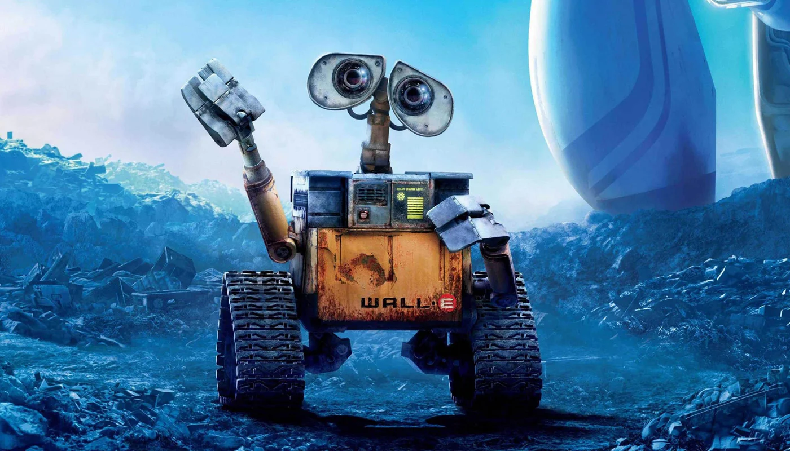

Lucas Walli
Sou estudante de Análise e Desenvolvimento de Sistemas. Sempre tive interesse por tecnologia, mas o que me fez dar o passo definitivo pra essa área foi enxergar tanto a oportunidade de mercado quanto a chance de mudar
de direção na minha carreira. Fora da faculdade, meu tempo é dedicado à minha família, principalmente ao meu filho, e à igreja, que também faz parte importante da minha rotina.